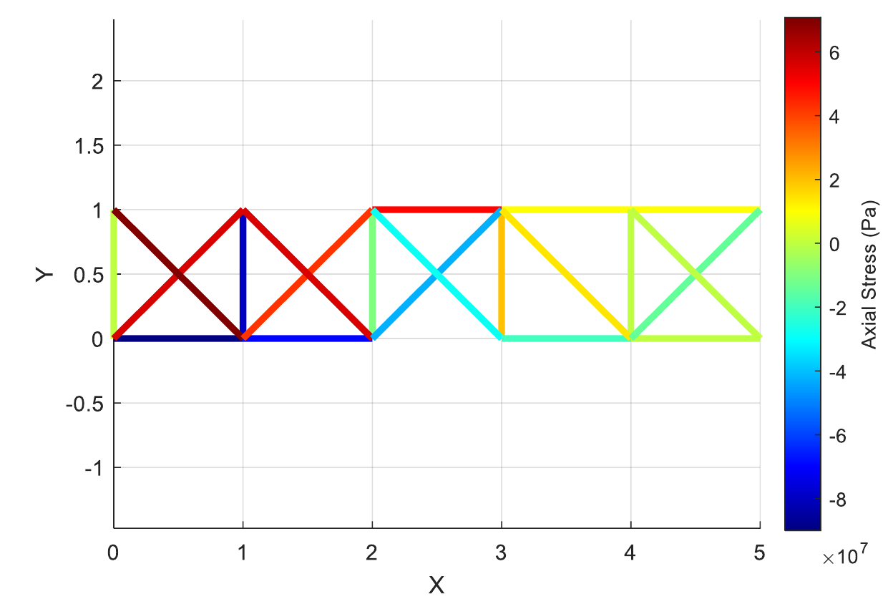
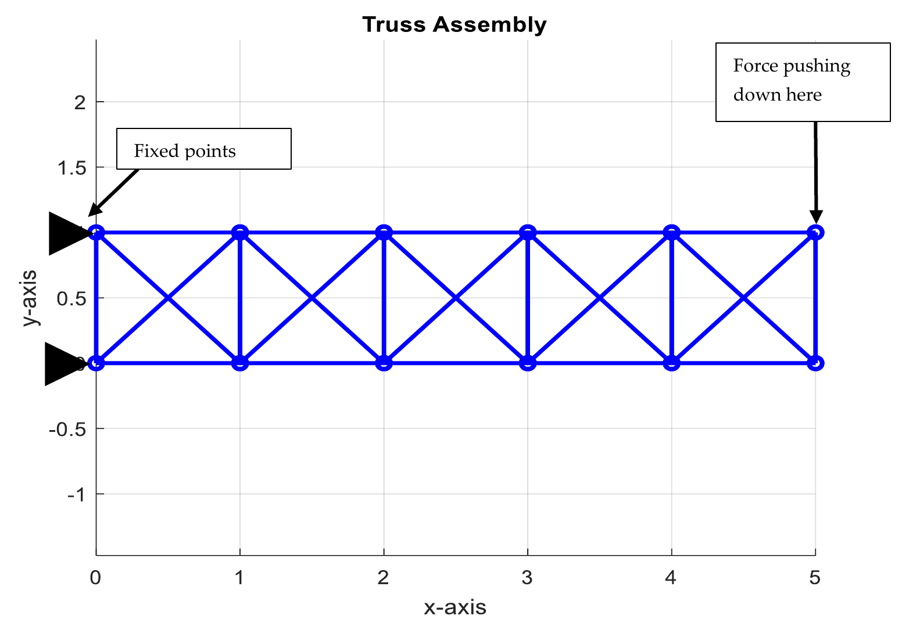
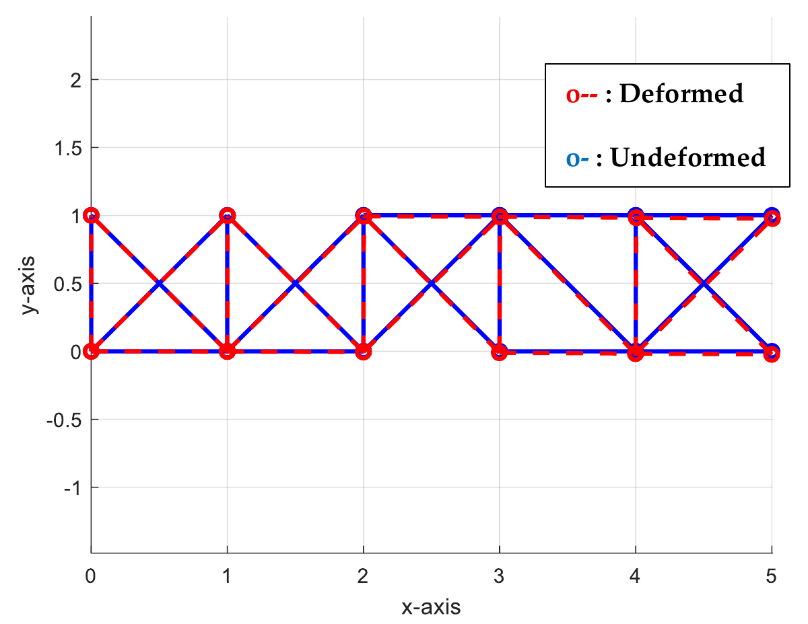

Structural optimization
Truss topology optimization
Searching for simpler trusses under displacement constraints.
- Timeline
- Mar — May 2025
- Context
- Computational project
- Tools & methods
Team: Jacob Cockerill, Prithvi Vijaykrishnan

Overview
We developed a MATLAB workflow for analyzing planar trusses and exploring which members could be removed. The project combines a custom nonlinear finite-element solver with a genetic algorithm, using member count as the objective and displacement and connectivity penalties to screen candidate designs.
Building the solver
I modeled each member as a two-node axial rod, transformed the element equations into global coordinates, and assembled the system around the specified supports and loading. The nonlinear solution uses multidimensional Newton–Raphson iteration with a central finite-difference Jacobian, followed by displacement, strain, and axial-stress calculations.
Checking the model
For a two-bay truss under a 1 kN load, the computed support reactions matched an analytical equilibrium check. I also compared the linear and nonlinear solvers on a three-bay truss: their small-load responses were nearly identical. This was a consistency check, not independent validation of the large-deformation results.
Catching an assembly error
Correct reactions did not guarantee correct internal load sharing. A connectivity audit revealed duplicate vertical members where adjacent bays joined, an error that was easy to miss in the stress plots because those members carried no force in the check case. I rewrote the node and element generation routine to remove the duplication.
Searching the topology
Each candidate represents a keep-or-remove decision for every member. Selection, crossover, and mutation explore different arrangements, while penalties discourage excessive nodal displacement and disconnected structures. The study examined five-, seven-, and eight-bay trusses; the five-bay baseline specified a 1 kN load and a 1 mm displacement limit.
What the constraint study showed
Changing the displacement limit and penalty weight affected which candidates survived the search. A tightened displacement case was reported as infeasible, illustrating the tradeoff between removing members and retaining a usable structure. The study explored that tradeoff; it did not establish a globally optimal or verified minimum-mass design.
Project details

Open full-size figure

Open full-size figure